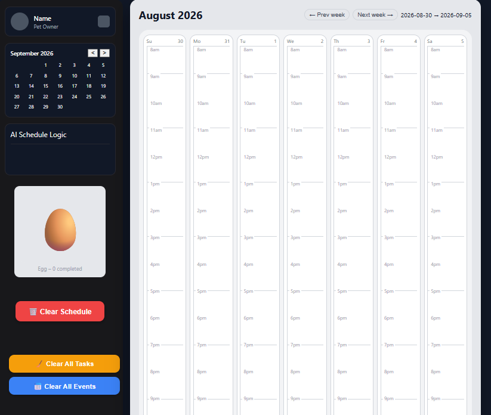
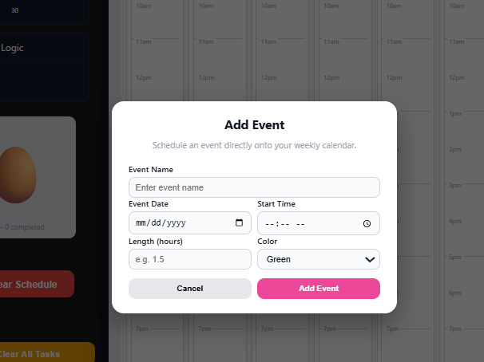
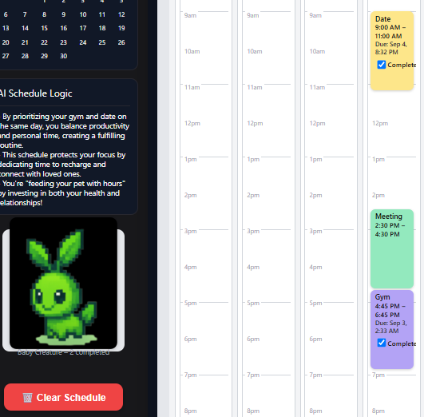
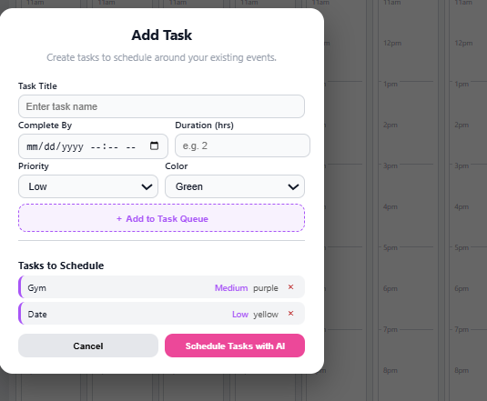

Project views





The concept
Task Tamer treats task planning as a scheduling problem rather than a to-do list. Users enter a task, deadline, duration, priority, and display color; tasks enter a queue and can then be scheduled into a weekly calendar.
Interaction design
The interface combines a weekly calendar with work/personal filters, task and event creation, a compact month navigator, and a pet that accumulates XP. The intent is to pair practical planning with a lightweight reward loop.
AI + fallback logic
The scheduling implementation attempts AI-assisted placement and includes a local fallback when the AI path fails. Scheduled blocks are normalized, stored, rendered on the calendar, and used to update the productivity feedback area.
What I would develop next
The next iteration would move scheduling to a backend, add authenticated persistence and real calendar integration, formalize scheduling constraints, and evaluate whether the gamification loop actually improves task completion rather than merely engagement.